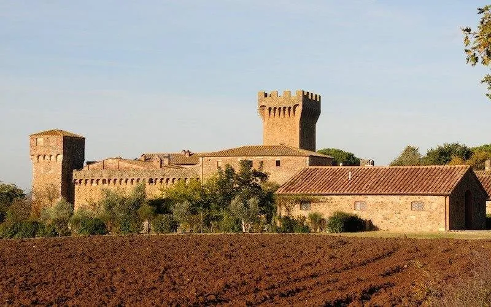
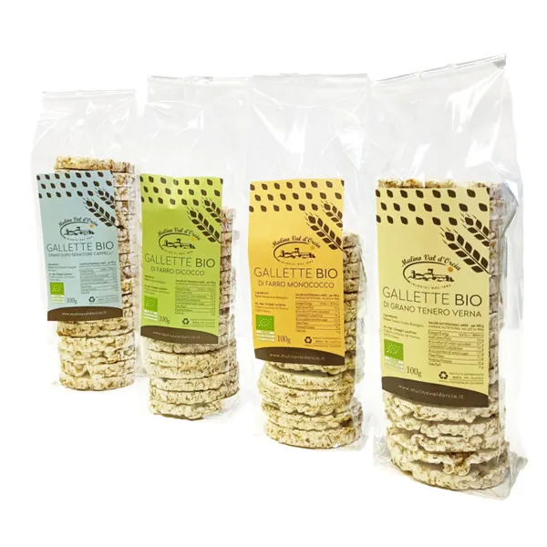
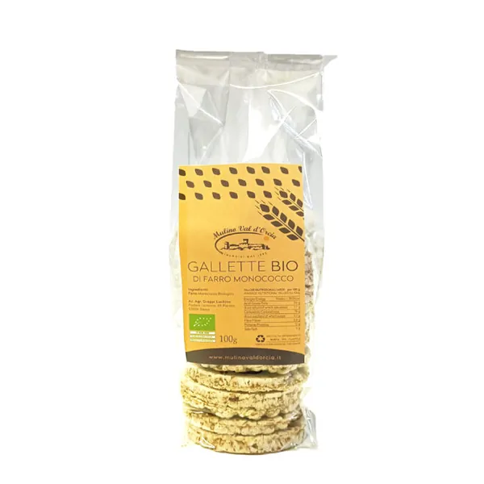
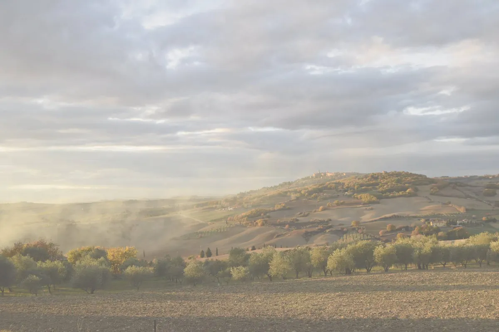

Pienza · Val d’Orcia · biologici dal 1992
Dal nostro grano alla tua tavola.
Agricoltori, mugnai e pastai: pasta di grani antichi, farine macinate a pietra, cereali e legumi bio, tutto fatto in azienda.


I più scelti
Da mettere nel carrello
 Pici di grano duro Senatore Cappelli4,75 €
Pici di grano duro Senatore Cappelli4,75 € Farina tipo 1 grani antichida 3,50 €
Farina tipo 1 grani antichida 3,50 €
Box degustazione gallette14,00 € Fusilli di grano duro Senatore Cappelli4,15 €
Fusilli di grano duro Senatore Cappelli4,15 € Fusilli di farro monococcum5,20 €
Fusilli di farro monococcum5,20 € Farina di farro monococcoda 4,50 €
Farina di farro monococcoda 4,50 € Paccheri di grano duro Senatore Cappelli4,15 €
Paccheri di grano duro Senatore Cappelli4,15 €
Gallette di farro monococco3,50 €La filiera
Quattro passaggi, tutti a Pienza.
- 01Il campo
Oltre 100 ettari a Pienza: grani antichi, farro e legumi coltivati in biologico dal 1992, a rotazione.
- 02Il mulino a pietra
Il chicco si macina intero e piano, così resta il germe con le sue vitamine e le fibre.
- 03Il pastificio
Trafilata al bronzo ed essiccata lentamente a bassa temperatura: pasta ambrata e porosa.
- 04La tua tavola
Tutto avviene in azienda, dalla semina alla confezione che ricevi a casa.

Vieni a trovarci
Il Mulino del Castello
Nel Castello di Spedaletto, antica grancia sulla Via Francigena, ci sono il laboratorio di pasta fresca, il punto vendita e il ristorante. Il nuovo stabilimento è a 2 km da Monticchiello.
Recensioni
Prima di ordinare
Quanto costa la spedizione?
Il sito annuncia la spedizione gratuita da 60 € di acquisto. Si spedisce con corriere espresso in Italia; non si spedisce all’estero.
Quando arriva l’ordine?
Entro 7 giorni lavorativi dal giorno dopo il pagamento, con consegna dal lunedì al venerdì.
I prodotti sono certificati biologici?
Sì: agricoltura biologica, ente di controllo IT BIO 009, operatore n. 0701 (indicato nelle schede).
Posso pagare alla consegna?
Sì, in contanti, in Italia e per ordini fino a 200 €, con un contributo di 7 €. Oppure carta (via PayPal), PayPal, prepagata o bonifico entro 3 giorni.